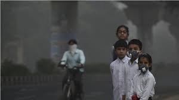
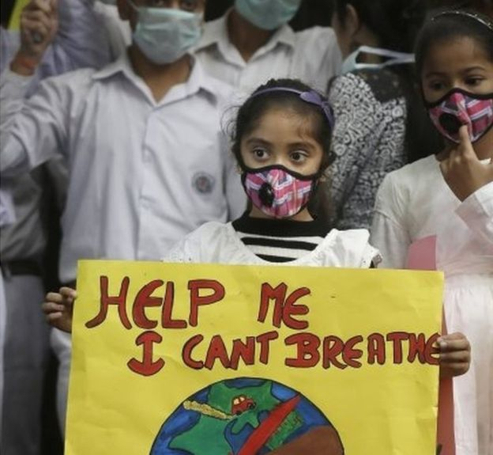

<link rel="stylesheet" href="https://cdnjs.cloudflare.com/ajax/libs/font-awesome/4.7.0/css/font-awesome.min.css">
<app-navbar></app-navbar>
<!--<div >
<video autoplay muted loop id="myVideo">
    <source  src="../../../assets/images/airPollution.mp4">
        
          
           
</video>
<p class="content">9 din 10 persoane respiră aer toxic.
    <br>
<span >Schimbarea incepe cu tine!</span>
</p>
</div>

    <br>
<h2  class="title">Efectele poluării asupra copiilor</h2>
<div class="container">
    <div class="row">
<div  class="col col-lg-7 left">
<p>Principala problemă în ceea ce privește poluarea o reprezintă calitatea aerului,
 care a scăzut considerabil în special în zonele urbane. 
<br>
 Potrivit unor estimări ale Organizației Mondiale a Sănătății,
  peste șapte milioane de oameni mor, anual, din cauza poluării atmosferice. </p>
<p>Lipsa aerului curat poate avea efecte negative asupra întregului organism, pornind
     de la tulburări ale somnului până la dezvoltarea unor tumori canceroase. 
 <br>   <br>  Potrivit specialiștilor din domeniu, particulele care contaminează aerul și 
     temperaturile ridicate afectează <b style="color:orange">inima, sistemul nervos central și funcția 
     respiratorie, efect care mărește riscul apariției unor boli vasculare și atacului
     cerebral.</b> Aerul poluat poate cauza și diverse alergii, care pot degenera în
      astm bronșic. Expunerea la diverse tipuri de poluanți, inclusiv parfumuri și
       solvenți, poate genera sensibilitatea chimică multiplă, cunoscută și ca boala 
       de mediu,
     care se manifestă asemănător reacțiilor alergice.</p>

     <br><br><br>
    <h3 style="left:40%; color: orange;"> Particule în suspensie PM10 și PM2.5 </h3>
    <p id="edit3">Acestea se pot infiltra în căile respiratorii și adânc în
        plămâni și să provoace probleme de sănătate.
        <b style="color: orange;"> 
        Efectele includ moartea prematură, agravarea bolilor
         cardiace și pulmonare. </b> Copiii sub 15 ani sunt în mod 
         special vulnerabili. Poluarea cu pulberi înrăutăţeşte 
         simptomele astmului, respectiv tuse, dureri în piept și
          dificultăți respiratorii.
   </p>
       <p>Copiii sub 15 ani inhalează mai mult aer, și în consecință
            mai mulți poluanți. Ei respiră mai repede decât adulții 
            și tind să respire mai mult pe gură, ocolind practic
             filtrul natural din nas. Sunt în mod special vulnerabili,
              deoarece plămânii lor nu sunt dezvoltați, iar țesutul 
              pulmonar care se dezvoltă în copilărie este mai sensibil.
       </p>
       <br> <br><br>
      <strong>Conform celui mai recent raport al Organizației Mondiale a Sănătății,
        <b style="color: orange;"> în fiecare zi aproximativ 93% din copiii cu vârsta sub cincisprezece ani 
          (adică 1,8 miliarde copii!) respiră un aer atât de poluat încât le este
           pusă în pericol însăși sănătatea și dezvoltarea fizică. </b>
           Dintre aceștia, peste 600.000 de copii au murit în 2016 din cauza
            infecțiilor la nivelul tractului respirator inferior cauzate de poluarea
             din aer. 
      </strong>
      <br> <br>
      
      
</div>

<div class="col col-lg-5 right">
    <p id="edit">83%</p>
    <p id="edit2">Aproximativ 83% din populatie respira zilnic un nivel ridicat de C02</p>
    <iframe width="420" height="345" 
    src="https://www.youtube.com/embed/GVBeY1jSG9Y">
    </iframe>
    <br>
    
    

    <br><br>
    
</div>
<div  class="col left">
    
<br>
   
<h2 style="color: orange; " >Ce putem face pentru a reduce poluarea aerului?</h2>   
        <br><br>
        <ul>
            <li class="list">reducecerea dependenței de carburanți fosili</li>
            <li class="list">investiții în îmbunătățirea eficienței energetice</li>
            <li class="list">facilitarea adoptării surselor de energie regenerabilă</li>
            <li class="list">o mai bună gestionare a deșeurilor toxice</li>
        </ul>
    <br> <br>
      <div class="container">
          <button  [routerLink]="['/TakeAction']"type="button" class="button" data-toggle="collapse" data-target="#demo" >
             <i class="fa fa-heart-o" aria-hidden="true" style="float: left; padding: 10px;"> </i>Doneaza
          </button>
          <div id="demo" class="collapse">
     <app-donatii></app-donatii>
          </div>
          
          <button (click)="onClick()"  [routerLink]="['/Petitie'] "type="button" class="button" >
            <i class="fa fa-heart-o" aria-hidden="true" style="float: left; padding: 10px;"> </i>Semneaza pentru  a opri defrisarea padurilor!
         </button>
        
        </div>
        <br>
    
    </div>
    
  </div>
-->
    
  
  
  